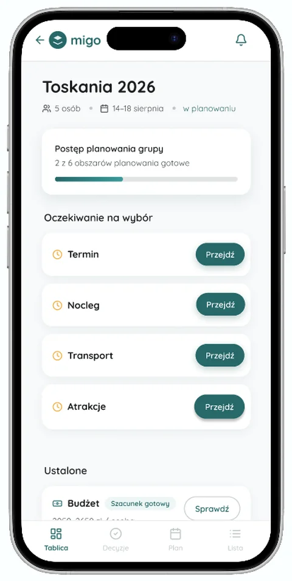
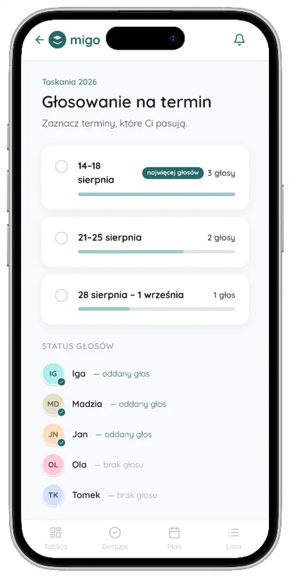
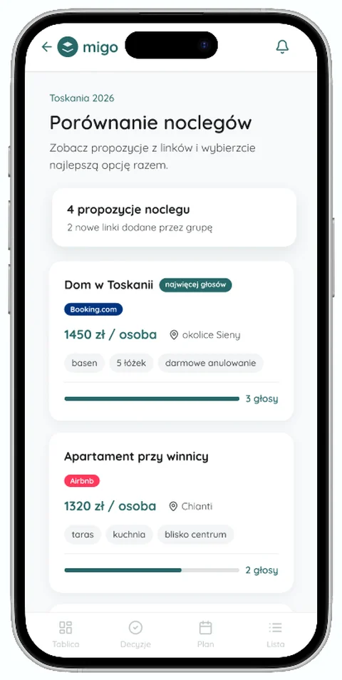
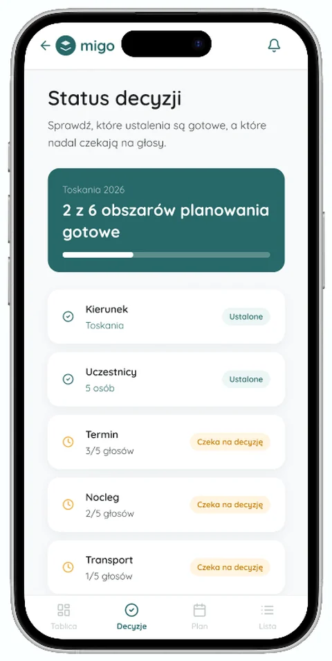
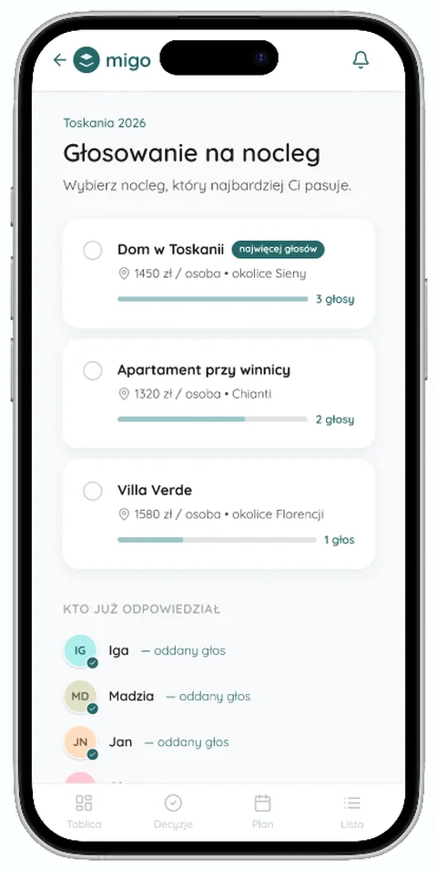
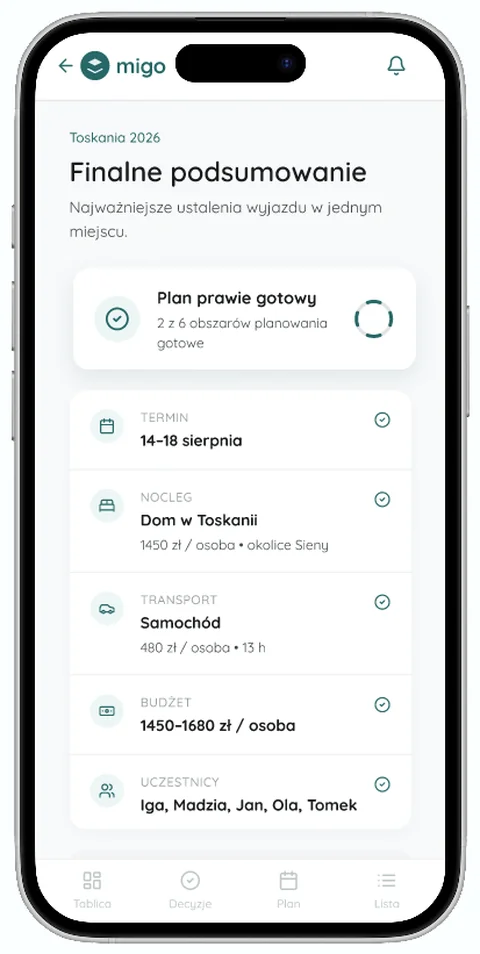

Research repository
Most AI products fail because teams design for how they think users will behave, not how they actually do.
I'm Magdalena, a cognitive science researcher in Kraków. I run the studies that replace assumptions with evidence: moderated usability sessions, quantitative surveys, statistical analysis, including live client work inside an NGO website-redesign program. And because I spent 10+ months building LLM products as an engineer, my findings arrive in a language product teams can ship.
Start with a finding
A pro-bono program asked what it actually changes. I wrote the plan and I'm helping run the answer. → S·02 NAUD · Strona od Nowa
Before redesigning an NGO's website I inventoried its work, and found its old domain selling supplements. → S·03 FOMO & sleep
Coping strategies didn't protect sleep. The fix belongs in the product. → S·04 JetBrains Store
He searched "Python", found nothing, and gave up. The store speaks product names; people speak tasks. → S·05 Group trip planner
Group chats hold the plan but can't hold a decision. Users ranked a shared board + voting first. →
- NGO digital-maturity study: interviews running on both tracks (previous & current editions)
- QA-testing developer builds of the new NAUD website against the UX/UI design
- Group trip planner: prototype and test plan ready, starting usability testing interviews
- Looking for a junior UXR role or internship at a product company working on AI
Index · 5 entries
Studies
Each study is written the way I'd hand it to a team: the insight first, the method right behind it for anyone who wants to check my work. Two are live client work; the rest are academic and recruitment studies, labeled as such.
Client work · evaluation & discovery for a pro-bono redesign program Mixed · interviews + survey 10–12 2026 In progress NAUD · Strona od Nowa
Client work · research groundwork for an NGO website redesign Desk research · audit · QA · 2026 In progress Does FOMO keep students awake?
Academic study · sleep, social media and the limits of self-regulation Quant · pre–post 30 2025 Completed Watching a non-expert shop for dev tools
Recruitment task · moderated usability study of the JetBrains Store Qual · think-aloud 1 2026 Completed Why one friend plans the whole trip
Course project · mixed-methods research for a group travel app Mixed methods 21 2026 In progress
S·01 · Client work · in progress
What does a pro-bono program actually change?
Strona od Nowa rebuilds NGO websites for free. The foundation behind it wanted evidence for two board-level decisions: did past editions actually change anything for the organisations, and which NGOs should the next edition take? I wrote the research plan and I'm now helping run the study.
My role
Author of the research plan (revised after team review), designer of the evaluative interview scenario, research ops (consent, recruitment materials, recording logistics), and interviewer. I work in a four-person volunteer research team within Fundacja Kompetencji Cyfrowych: a project lead, a co-interviewer, a benchmark analyst plus the program coordinator who holds the contact base.
Why two tracks, not one
The board's two questions need different research. So the plan deliberately splits into an evaluation track (what changed for organisations from previous editions: the website, their digital practice, their confidence) and a discovery track (what barriers and needs current NGOs have, and what makes collaboration with the program effective). One instrument trying to answer both would do neither well.
Method, mapped to the questions
Decisions I'd defend in a review
10–12 interviewees instead of ~20 organisations. The first draft aimed wider; after a scoping discussion with the project lead we cut the sample and split it evenly between previous and current editions. Depth with two comparable groups beats breadth a volunteer team can't process well.
An external maturity framework instead of a homemade scale. Benchmarking against TechSoup's Digital Assessment Tool anchors "digital maturity" in something the board can compare against the wider sector.
Scenario A is built backwards from the report. Four blocks: life before the project, the collaboration itself, what changed after, and a short discovery module on current barriers. Ten core questions plus optional probes.
Research ops, the unglamorous part
I prepared the GDPR consent and information form (a legal review caught real issues: an internal contradiction in the anonymisation clause, inconsistent recording consent, missing data-controller details), drafted two versions of the recruitment invitation (relational and formal), and solved the logistics that decide whether fieldwork happens at all, like the fact that our meeting tool couldn't record sessions.
Status & what I'm watching
Interviews are running on both tracks (previous and current editions, scenarios A and B), and I'm starting the first pass of qualitative synthesis alongside fieldwork, so this case is still about the thinking rather than the findings. The risks I'm tracking: self-selection, recall bias in the evaluation track, and recruiting busy NGO staff without a real incentive budget.
S·02 · Client work · in progress
The groundwork an NGO website redesign stands on
NAUD is a foundation running science education for children, mid-rebrand, getting a new website through the Strona od Nowa program. Before anyone designed anything, I built the evidence base: a two-version inventory, verification of the entire web presence, an SEO audit, and now QA of developer builds. The verification surfaced the kind of finding audits exist for: the foundation's former domain had lapsed and now serves a commercial supplements site.
My role
Researcher on the inventory and audit track, inside a cross-functional volunteer team (program coordinators, UX/UI designers, developers). The client is real, the deadlines are real, and the foundation's board reads what I write.
Why an inventory before a sitemap
A website's structure should come from what the organisation actually does, not from a template. NAUD's years of activity lived scattered across old pages, partner sites and press mentions. The first deliverable was a research report inventorying all of it, structured so the team could derive the new information architecture from evidence.
The two-version design was deliberate. Version 1 mapped everything desk research could reach and made the gaps explicit; the gap list became a focused questionnaire for the foundation. Version 2 folded in their answers into a publication-ready document.
Verify everything, not a sample
I checked every source behind the report: 33 links across the foundation's web presence. Sampling would have missed the headline:
The foundation's former domain, naud.edu.pl, had lapsed and now serves a commercial supplements site. Anyone following old materials lands on someone else's shop.
QA as the last research task
I now test each developer build against the UX/UI design (colors, typography, spacing) before designer handoff. It's the same skill as research: noticing the gap between intention and reality, and documenting it so someone can act.
Status & honest framing
The site is in development, so outcome metrics don't exist yet. If I ran it again, I'd open the client question list in week one instead of after v1.
S·03 · Quantitative · academic study
Does FOMO keep students awake?
Yes: higher FOMO predicted worse sleep. And the coping strategies people already use didn't soften the effect, which moves the responsibility upstream. If a product fuels FOMO, the product has to carry the fix.
Why this study
Young adults check social feeds last thing at night and first thing in the morning. The folk theory says people who regulate their emotions well are protected from the costs. I wanted to test the folk theory with instruments, not vibes: does Fear of Missing Out actually correlate with sleep quality, and does emotion regulation moderate the damage?
Setup
Pre–post design with a 14-day behavioral intervention. 30 students (18F / 12M, ages 19–26) at Jagiellonian University, all using social media at least five days a week.
- FOMO Scale (Przybylski et al., 2013)
- Athens Insomnia Scale for sleep quality
- Emotion Regulation Questionnaire (reappraisal + suppression)
- Daily exercises: emotion journal, one authentic statement a day, social-comparison reframing
What the data said
What it means for product teams
The null moderation result is the interesting one. If individual coping doesn't buffer FOMO's cost to sleep, then waiting for users to self-regulate is not a strategy. The levers are product-level: notification design, fewer social comparison surfaces, screen-time nudges.
The second lesson is about effect size of small things: fourteen days of low-effort daily prompts produced measurable psychological change. Useful calibration for any team designing habit-forming, or habit-breaking, features.
Honest limitations
Small convenience sample (N = 30). FOMO measured post-intervention only. No control group, and self-report bias is possible. I'd treat the correlations as a reason to run the bigger study, not as the final word.
S·04 · Usability · recruitment task
Watching a non-expert shop for developer tools
He typed "Python" into the JetBrains Store and concluded it had nothing for him. The catalog speaks in product names while people arrive with tasks. One exploratory session, three severity-rated issues, five recommendations a team could ship.
The brief
A recruitment task: run a usability study of the JetBrains Store, scoped to a single participant. The point of an N = 1 study isn't generalizable findings. It's demonstrating process, analytical reasoning, and the ability to turn limited data into decisions.
I deliberately recruited a semi-technical participant (male, 50s, comfortable with online shopping, zero JetBrains experience). Non-experts surface the clarity problems that domain-familiar users step over without noticing. The session ran remotely over Zoom, in Polish, so the think-aloud could be natural rather than performed.
What happened
Three tasks: find a tool for learning Python and its price, find student offers, find any promotions. Task one collapsed immediately, and that collapse was the study's most valuable moment.
"I'm looking for the word Python in these boxes and I can barely see it. I'll probably give up on this page, there are no tools for Python programming here at all."
"Why are some of these buttons blue and some white?"
"The page is readable, but there's no Buy button. At least not on the student section. I don't understand why it's not there."
Issues by severity
Recommendations
- Label product cards by use case and language ("For Python development"), so people can orient by task
- Default to the "For Individual Use" tab, or add a prominent user-type selector up top
- Standardise Buy button styling, or make the functional difference visible
- Give the Students section a clear CTA so a found offer leads somewhere
- Consider a "What are you trying to do?" entry point that routes visitors without requiring product knowledge
Honest limitations
N = 1 by design: every finding is a hypothesis for a larger test, not a conclusion. The session ran about 11 minutes of a planned 20 because the participant moved fast, and one moderator prompt was used in task 2.
S·05 · Mixed methods · course project
Why one friend always plans the whole trip
21 young travelers plan trips in group chats and quietly hate it. Information scatters, decisions stall, one person carries everything. Asked to rank six possible features, they put a shared trip board and group voting on top, so that pair is what the prototype is built around.
The problem
A group chat with twelve people and forty Booking.com links is not a planning tool, it's an archive of indecision. The tools that could help are either too heavy (Notion) or too shapeless (shared notes). This course project asks whether a purpose-built app can change the dynamic, and what it must do first.
Phase 1 · generative survey
Online survey distributed through social networks. Screening: actively helped plan a group trip in the last two years, not a professional organiser. 24 responses collected, 21 qualified. Mostly ages 18–22 (95%), typical group of 3–5 people (86%). Roles split into main organisers (38%), active co-planners (48%) and people who join ready plans (14%).
The participatory part: respondents ranked six candidate features by personal priority, which gives both an average preference order and the individual variance that flags divergent needs.
What Phase 1 found
The design space sits exactly in the gap between what people use (chat) and what they need (structure, shared visibility, decision tooling), without rebuilding Notion's complexity or the chat's formlessness.
The prototype
Six screens covering the core loop: land on the trip board, vote on the open decisions, and watch status update as the group answers. Built in Figma.






Where it goes next
Honest limitations
Convenience sample, heavily 18–22, so findings travel best within that segment. Phase 2 exists to check whether the design actually reduces the friction Phase 1 identified, rather than assuming it will.
About
A researcher who has shipped.
I'm a second-year cognitive science student at Jagiellonian University in Kraków. For nearly a year I worked as an AI engineer, building LLM features that real users touched: RAG pipelines, conversational flows, agent orchestration. Then I moved to the question that interested me more: what those users were actually doing on the other side of the screen.
That history changes how I research. I can read a pipeline diagram and an interview transcript in the same afternoon, I know which findings an engineering team can act on by Monday, and I don't need "the model does X" translated for me.
The theme I keep returning to is the distance between what an AI product does and what its users believe it does. That distance is where trust breaks, and where the most interesting research questions live.
Outside of research: I'm writing a psychological-legal thriller, six years in, 70k words, still not done. I listen to a lot of jazz. I go on long forest walks and keep a handwritten journal. I'm drawn to questions about cults and closed communities, which is probably why AI sycophancy and how people project emotions onto systems became my research niche.
How I work
Insight first, evidence attached
Reports open with the decision-relevant finding. The methodology sits right behind it, for anyone who wants to check my work. Nobody has to read forty slides to learn one thing.
Structure is kindness
Screeners, protocols and analysis plans exist before the first session starts. In a field that often improvises, a clean method is what makes the surprising result believable.
Participants talk to a person, not a protocol
Sessions feel like conversations. That's deliberate, and it's where the honest quotes come from.
Toolkit
- Qualitative: interviews, observation, moderation
- Quantitative: surveys, statistics in R & Python
- Usability testing · think-aloud
- Research ops: consent, recruitment, logistics
- Synthesis & research reporting
- AI / LLM product evaluation
- Conversational UX
- HCI & cognitive psychology foundations
- Figma · Miro · Notion
- RAG pipelines · LangChain · pgvector
- FastAPI · Django · Azure DevOps
- Jira · Git · CI/CD
- English C1 (Cambridge, 198/210) · Polish native
Gallup CliftonStrengths, if you're into that: Relator, Futuristic, Discipline,
Significance, Activator.
Off-screen: volunteer fire brigade since 2022, three times 1st place in women's team
firefighting competitions. It taught me to stay calm when a session goes sideways, and to
know when to act and when to wait.
Colophon: one hand-built HTML file. Familjen Grotesk & Spline Sans Mono. No
trackers, no cookies. Updated July 2026.
Experience
Where the evidence comes from.
Two volunteer tracks. In "Strona od Nowa" I work directly with NGO clients: UX audits, usability testing, synthesis inside cross-functional sprints. In parallel I run a research project on the digital maturity of the NGOs the programme serves: research design, stakeholder mapping, benchmarking against the TechSoup Digital Assessment Tool.
Structured mentorship in UX research and AI product skills, focused on career direction and cross-functional thinking.
Built LLM-powered features end-to-end: conversational flows, RAG pipeline outputs structured for user-facing delivery, agent orchestration logic. QA of AI features across cross-functional teams.
Scalable AI orchestration workflows in production, CI/CD, system documentation. Promoted to Junior AI Engineer after four months.
One of 20 selected nationwide. 1:1 mentoring on career development, cross-functional collaboration and decision-making in tech.
Cognitive psychology, HCI, statistics, neuroscience, AI. Coursework in research methods, human-computer interaction, statistical analysis, perception, bilingualism & cognition.
Contact
Say hello.
Internships, research collaborations, or a conversation about how people relate to AI systems. I read everything.
Open to junior UXR roles & internships · Kraków (CET) or remote · usually replies within two days
This page isn't in the repository.
An empty state should still tell you where to go. Try the search, or start from the overview.